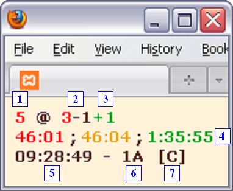
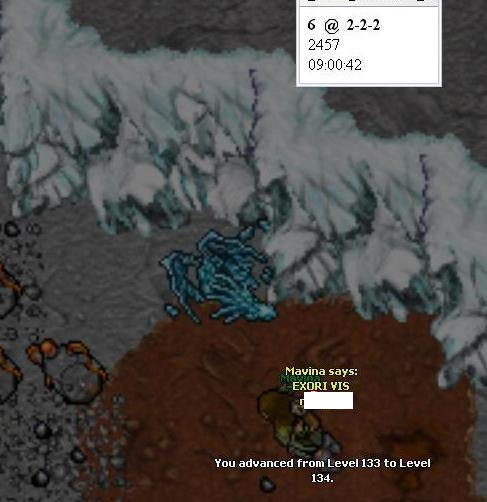

There are thousands of Ventrilo status scripts on the internet, all of which show exactly the same as the one of Ventrilo.com,
except with more fancy colours and icons. But what if channels, names, comments and all that are hidden by the admin?
All you'll see is a table with a ton of Xs and seemingly random numbers.
But hey, you still got me.
This script is designed to get the maximum amount of information out of said table. You'll be able to see how many users
are in the same channel, how many of them are admins or phantoms, how long they have been online and more. You might want
to go as far as calling it the next generation of espionage on Tibia, if only because appreciation gives me a raging hardon.
Recent Changes:
-Rewrote everything from scratch, old code was just shit 1.5 years ago
-Replaced JavaScript 'Refresh' link with normal one (wtf was I thinking?)
-Now using cURL instead of file_get_contents() so no more loading errors
-Removed 'possible MCs' as detected by ping, was completely useless
-Added phantom support for the channel overview (though hidden by default)
-Phantoms are now hidden from all statistics by default unless explicitly requested
-Fixed bug that would ignore users with spaces in names (if names unhidden)
-Added a 4th colour indicator (blue) for the default view (not min)
-Changed Ontime to showing ((hh:)mm:)ss rather than seconds depending on ontime
-Fixed CSS float bug (menu wrapping around the left table)
-Removed that motherfucking semicolon in the top left corner
-Script will now tell you when channels or names are unhidden in the server settings,
you can then check vent.com or any other script for more info on those
-Added hit counter on min view out of curiosity, my server stat logs are shit.
(invisible unless you run NoScript anyway)
Note:
I just formatted my comp and haven't re-installed all my browsers for CSS testing yet.
Layout works flawlessly in Chrome, FF3.5 and IE6.
Contact me using the form on tnuC.org if it looks messed up in IE7/IE8.
(incl. screenshot if possible)
Default View:
While the main idea behind the entire script is the minimized version, a more graphical approach is way more eye-friendly for
the casual lookup.
Default View shows:
-Total number of real users online (excluding phantoms)
-Numbers of admins online
-Number of phantoms online (hidden elsewhere unless you click 'Show Phantoms')
-Server uptime
-Additional unhidden info (Channels and/or User names), only shown if unhidden
Check Ventrilo.com for more information like channel/name listings if so
Additionally, you will see a list of channels ordered by the number of users inside and a list of the (up to) five last users
that logged on. Flags can be A (Admin), P (Phantom) or L (Lobby). A channel with 3 As in the flags column means there are 3
Admins in the channel. The lobby is treated separetely because with its fixed channel ID it is the only channel you can
actually identify while channels are hidden in the server settings. It will only be shown if the lobby is not empty.
The colours in the Recent column correlate to those in the Recent Connections table. For example, a red mark next to a channel
on the left, means that the user that logged in last, and is also red on the right table, is currently in that channel.
Minimized View:
This is what it's all about. Minimized view features most of the information from the default view compressed to use minimum
space and server load and presents it in a way that allows you to see everything you need to know at a quick glance.
Minimized View shows:

1. Number of users online
2. Users by channels**
3. Users in the lobby (only shown if >0)
4. Online times of the last 3 users that connected
5. Current CET time
6. Total number of Admins online
7. Additional unhidden information (C=Channels, N=Names, X=Comments)
**As explained for the default view, the colours correlate to the users that logged on last (4.) so you know what channels
the last people are in. Note that the colour of the "newer" user has priority, so if "red" and "green" are in the same
channel, the channel is red.
The Full Potential:
Use min view together with a 3rd party program such as
PowerMenu
that allows you to make a window 'Always on Top', so it stays on top of Tibia while playing and all you need to check again is
clicking the window and pressing F5.
Still too much effort?
Use Firefox and get the
ReloadEvery addon to make
the page refresh automatically every X seconds or minutes. Since all vent lookup scripts function in realtime you'll have a live
alarm system and can prepare for a masslog just a few seconds after the enemy starts gathering.

(I use a resolution of 1600*1200 so the window takes but the space of 1-2 Tibia sqm)
(Screenshot shows an ancient version with way less details by the way)